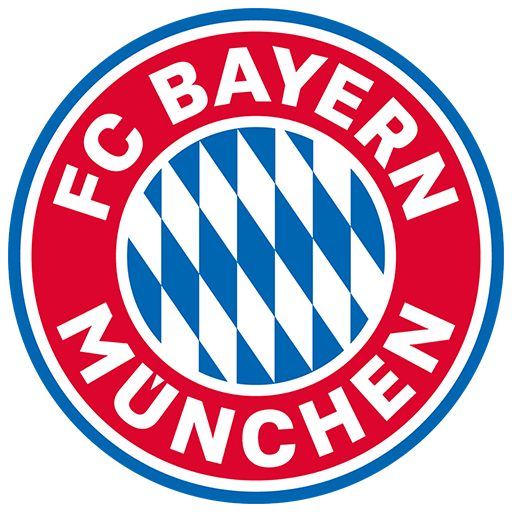

Bayern Munich
Nombre completo: Fußball Club Bayern München e.V.
Apodo: Die Bayern (los bávaros)
Fundacion: 1900
Ciudad: Munich
Estadio: Estadio Allianz Arena
TITULOS

Bundesliga
32
1932 - 1968/69 RFA - 1971/72 RFA - 1972/73 RFA - 1973/74 RFA - 1979/80 RFA - 1980/81 RFA - 1984/85 RFA - 1985/86 RFA - 1986/87 RFA - 1988/89 RFA - 1989/90 RFA - 1993/94 - 1996/97 - 1998/99 - 1999/00 - 2000/01 - 2002/03 - 2004/05 - 2005/06 - 2007/08 - 2009/10 - 2012/13 - 2013/14 - 2014/15 - 2015/16 - 2016/17 - 2017/18 - 2018/19 - 2019/20 - 2020/21 - 2021/22

DFB Pokal
20
1956/57 - 1965/66 - 1966/67 - 1968/69 - 1970/71 - 1981/82 - 1983/84 - 1985/86 - 1997/98 - 1999/00 - 2002/03 - 2004/05 - 2005/06 - 2007/08 - 2009/10 - 2012/13 - 2013/14 - 2015/16 - 2018/19 - 2019/20

Supercopa Alemana
10
1987 - 1990 - 2010 - 2012 - 2016 - 2017 - 2018 - 2020 - 2021 - 2022

Copa de la Liga de Alemania
6
1997 - 1998 - 1999 - 2000 - 2004 - 2007

Mundial De Clubes
2
2013 - 2020

Intercontinental
2
1976 - 2001

UEFA Champions League
6
1973/74 - 1974/75 - 1975/76 - 2000/01 - 2012/13 - 2019/20

Recopa de Europa
1
1966/67

UEFA Europa League
1
1995/96

Supercopa UEFA/h3>
6
2013 - 2020
ESTADIO
Nombre: Estadio Allianz Arena
Fundacion: 2005
Ciudad: Munich
Capacidad: 71.437 espectadores